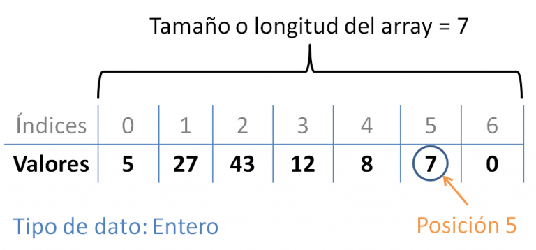

Curso de programación
Clase 4: Arrays y listas
Seguimos con Tipos de datos
Repaso de tipos de datos vistos
- Numéricos: enteros y reales (int/float)
- Lógicos booleanos (True/False)
- Cadena de caracteres (Strings)
Son tipos de datos "simples". A medida que los programas toman mas complejidad, necesitamos otras estructuras para resolver los problemas.
¿Para qué sirve lo que veremos hoy?
Supongamos que necesitamos escribir un programa que se registren los nombres de las primeras diez personas que llegaron al curso en un determinado día.
Como sabemos que son diez, podríamos definir diez variables de tipo string para registrar cada uno de los nombres.
Si bien esta solución parecería ser la mas sencilla, no escala. Es decir, luego se nos pide hacer que registremos las primeras 200 personas que llegan a un auditorio y tenemos que reescribir el código y definiendo 200 variables.
A veces necesitamos almacenar muchos datos y es útil contar con estructuras de datos que nos permitan realizar las operaciones necesarias, mantenerlas ordenadas y sea fácil acceder a los datos.
Teniendo este problema como base, veremos como nos pueden ayudar las estructuras de datos Arrays y Listas.
Arrays
Arrays
“Es una zona de almacenamiento contiguo (en la memoria) que contiene una serie de elementos del mismo tipo.”
En otras palabras, es una variable que tiene espacio en la memoria para almacenar varios* elementos del mismo tipo. Pueden ser, int, float, strings... etc.
*En los arrays, el espacio se reserva en el momento de definir la variable y luego no puede cambiar.
Arrays (Características)
- Homogéneo: Todos los elementos del array son del mismo tipo de datos. Y se define en el momento que definimos el array.
- Dimensiones: Pueden ser n dimensionales. Los mas comunes son de 1 dimensión (vectores) y de 2 dimensiones (matrices).
- Indexado: Mediante uno o mas índices es posible acceder a cualquier elemento del array. El índice es un valor numérico del 0 a n-1. Siendo 0 la referencia al primer elemento y n-1 el último. La cantidad de índices del array define las dimensiones del mismo. Por ejemplo, un array de una dimensión tendrá un índice. Uno de dos dimensiones tendrá dos índices.
- Tamaño fijo: El tamaño del array es fijo y por lo tanto, la cantidad de espacio para almacenar datos no varía durante la ejecución del programa.
Vectores (Arreglos 1d)
“Un vector o arreglo lineal es un tipo de dato arreglo con un índice, es decir con una dimensión.”
Por lo general se usa el término arreglo o array para referirse a un vector.
Estructura básica de un array
- Nombre (o identificador)
- Tamaño Es el número de elementos podrá almacenar. El tamaño impacta en la memoria.
- Índice Por lo general es un número entre 0 hasta n-1. Siendo n el tamaño total del arreglo.
- Elemento o valor El elemento es el dato que almacenará el arreglo en un índice determinado.
Estructura básica de un array
Ejemplo de array en C++
// Declaración de array de números enteros
int arreglo_clase[7] = {5, 27, 43, 12, 8, 7, 0};
// Accedo al elemento en la posición 5
int x = arreglo_clase[5]; // El valor de x será 7
Estructura de arreglo_clase
Ejemplo de array en C++
Podemos caer fuera de rango
// Se declara un array vacío de longitud 10
int arreglo_vacio[10];
arreglo_vacio[9] = 22;
arreglo_vacio[10] = 224;
¿Qué pasará luego de ejecutar la línea 6?
¡ERROR! Out of range
Como el índice empieza en 0 si sumamos 10 llegamos a 9. Al tratar de poner un valor en la posición 10 dará un error fuera de rango.
Matrices
Son arreglos de dos dimensiones. Se puede ver como una estructura que tiene filas por un lado y columnas por otro. Un índice se usará para localizar las filas y el otro índice para localizar las columnas.
Definición de una matriz
// Definimos una matriz de 3 filas por 3 columnas
int matriz[3][3];

Arrays en Python
Python no tiene el concepto de array como estuvimos viendo recién. Pero se puede implementar con listas o ndarray usando la librería NumPy.
¿Preguntas?
Listas
Listas
“Una lista es un dato abstracto que representa una secuencia ordenada de valores, donde el mismo valor puede ocurrir más de una vez (pueden repetirse). ”
Muchos lenguajes de programación proporcionan soporte para tipos de dato de la lista, y tienen sintaxis especiales y semánticas para listas y operaciones de lista.
Las listas son usualmente implementadas como listas enlazadas o como arrays de longitud variable o array dinámicos.
Estructura de una lista
Listas en Python
“Las listas en Python son un tipo de dato que permite almacenar datos de cualquier tipo. Son mutables y dinámicas.”
- Ordenadas: Los elementos mantienen el orden en el que han sido definidos en la lista.
- Indexadas:Pueden ser indexadas utilizando corchetes []. Similar a los arrays visto antes.
- Mutables: Los elementos pueden ser modificados y cambiados durante la ejecución del programa.
- Dinámica: Se pueden añadir y quitar elementos de la misma durante la ejecución del programa.
Crear listas en Python
Una lista en Python se define entre[].
[] # Esto es una lista vacía
[1,2,3,4] # Una lista con 4 elementos enteros
Asignándolo a una variable
lista_vacia = [] # Variable tipo lista.
lista_numeros = [1,2,3,4] # Una variable tipo lista
Por lo general, las listas se usan asignándolas a variables, para que de esa manera puedan modificarse y consultarse. De otra manera el dato se perderá.
Creando listas
# Lista de strings
lista_nombres = ["Juan", "Sebastián", "Cristian"]
# Una lista puede ser heterogénea con elementos distinto tipo
lista_nueva = [1,"Hola",3.44,[1,2,3]]
# Imprimir listas
print(lista_nombres)
print(lista_nueva)
Output
['Juan', 'Sebastián', 'Cristian']
[1, 'Hola', 3.44, [1, 2, 3]]
Acceder y modificar listas
Si tenemos una lista a con 3 elementos almacenados en ella, podemos acceder a los mismos usando corchetes y un índice, que va desde 0 a n-1 siendo n el tamaño de la lista.
a = [90, "Python", 3.87]
print(a[0]) #90
print(a[1]) #Python
print(a[2]) #3.87
Los i-últimos elementos
print(a[-1]) #3.87 -> El último elemento
print(a[-2]) #Python -> El ante último
Modificar un elemento
a[1] = "Hola"
print (a[1]) # Hola
Eliminar elemento de una lista
Hay distintas formas de eliminar elementos de una lista. Ahora veremos del y remove().
a = [90, "Python", 3.87]
del a[1] # Elimina el elemento en la posición 1 de la lista
print(a) # [90, 3.87]
a.remove(90) # Elimina el 90 de la lista
print(a) # [3.87]
Recorrer (iterar) listas
Ejemplo #1
lista = [5, 9, 10]
for e in lista:
print(e)
#5
#9
#10
La "variable" "e" dentro del for se refiere al elemento actual de la lista.
El nombre de esa variable es opcional y puede ser cualquier nombre válido para una variable cualquiera.
Recorrer (iterar) listas
Dentro de la iteración, podemos tratar al elemento de la lista como una variable cualquiera.
Ejemplo #2
lista = [5, 3, 9, 10]
for l in lista:
if l => 9:
print (l)
¿Qué dará como salida el programa?
9
10
Recorrer (iterar) listas
Ejemplo #3
alumnxs = ["Matias", "Ana", "Juan", "Victoria"]
for a in alumnxs:
if a == "Juan":
print(f"¡Hola {a}!")
else:
print(a)
¿Qué dará como salida el programa?
Output
Matias
Ana
¡Hola Juan!
Victoria
¿Preguntas?
Funciones para listas
Funciones para listas
Python (como otros lenguajes) nos proveen funciones, métodos o herramientas para interactuar o manipular listas. A continuación veremos algunos con ejemplos.
Agregar elemento
El método apend() añade un elemento al final de la lista.
l = [1, 2]
l.append(3)
print(l) #[1, 2, 3]
l.append("¡Hola!")
print(l) #[1, 2, 3, 'Hola']
Insertar
El método insert(indice, elem) añade un elemento en una posición o índice determinado. Recordar que el primer elemento es el índice[0].
l = [1, 3]
l.insert(1, 2) #[1, 2, 3]
l.insert(2,99) # [1, 2, 99, 3]
l.insert(15,6) # Out of range?...
¡NO da error fuera de rango! <3
Python se da cuenta que está fuera de rango y lo inserta al final.
[1, 2, 99, 3, 6]
PERO si se intenta agregar con un índice fuera de rango sí dará error.
l[90] = 0 # IndexError: list assignment index out of range
Quitar un elemento
El método remove(elem) recibe como argumento un objeto y lo borra de la lista.
l = [1, 2, 3]
l.remove(3)
print(l) #[1, 2]
El método pop() retorna el último elemento de la lista y lo borra. Si se pasa como parámetro un índice permite retornar y borrar elementos diferentes al último.
l = [1, 2, 3]
l.pop()
print(l) #[1, 2]
print(l.pop()) #
Obtener el índice de un elemento
El método index(elem) recibe como argumento un elemento y retorna el número del índice donde se encuentra.
l = ['Vaca', 'Pato', 'Gato', 'Gallina']
indice = l.index('Gato')
print(indice) # Será 2.
En caso que no esté dará error
l = ['Vaca', 'Pato', 'Gato', 'Gallina']
indice = l.index('Pez')
ValueError: 'Pez' is not in list
Orden
El método reverse() invierte el orden de la lista.
l = [1, 2, 3]
l.reverse()
print(l) #[3, 2, 1]
El método sort() ordena los elementos de menor a mayor por defecto.
l = [3, 1, 2]
l.sort()
print(l) #[1, 2, 3]
Longitud de la lista
El método len( retorna un número con la cantidad de elementos de la lista.
l = [3, 1, 2, 9, 12]
cant = len(l)
print(cant) # 5
¿Está en la lista?
De esta manera se puede saber por sí o por no (True/False) si un elemento está en una lista.
list = [1,2,3,4,5,6]
print (1 in list) # True
print (8 in list) # False
Recorrer una lista anidada
A continuación se presenta una lista anidada y como recorrerla.
nom_y_edad = [["Alberto", 60], ["Avril", 21],
["Manuel", 37], ["Gabriel", 40], ["Mai", 20]]
# Recorrer e informar nombre y edad
for nombre in nom_y_edad:
print(f"{nombre[0]} tiene {nombre[1]} años.")
Output
Alberto tiene 60 años.
Avril tiene 21 años.
Manuel tiene 37 años.
Gabriel tiene 40 años.
Mai tiene 20 años.
Recorrer una lista anidada
Otra forma de recorrer la misma lista. Este método es mas intuitivo.
nom_y_edad = [["Alberto", 60], ["Avril", 21],
["Manuel", 37], ["Gabriel", 40], ["Mai", 20]]
for nombre, edad in nom_y_edad:
print(f"{nombre} tiene {edad} años.")
Output
Alberto tiene 60 años.
Avril tiene 21 años.
Manuel tiene 37 años.
Gabriel tiene 40 años.
Mai tiene 20 años.
¿Preguntas?
Ejercicios en clase
Ejercicio en clase 1
Escriba un programa en Python que imprima por pantalla ¡HOLA MUNDO!.
Utilice alguno de los intérpretes online vistos en clase.
Ejercicio en clase 2
Escriba un programa en Python que imprima tres veces por pantalla ¡HOLA MUNDO!.
Ejercicio en clase 3
Escriba un programa en Python que solicite al usuario ingresar su nombre e imprima un saludo, por ejemplo "¡Hola Cristian!".
Ejercicio en clase 4
Escriba un programa en Python que solicite al usuario ingresar dos números y devuelva la suma de ellos.
¡Fin de la clase!
Ir al inicioPráctica 3
Exportar clase a PDF